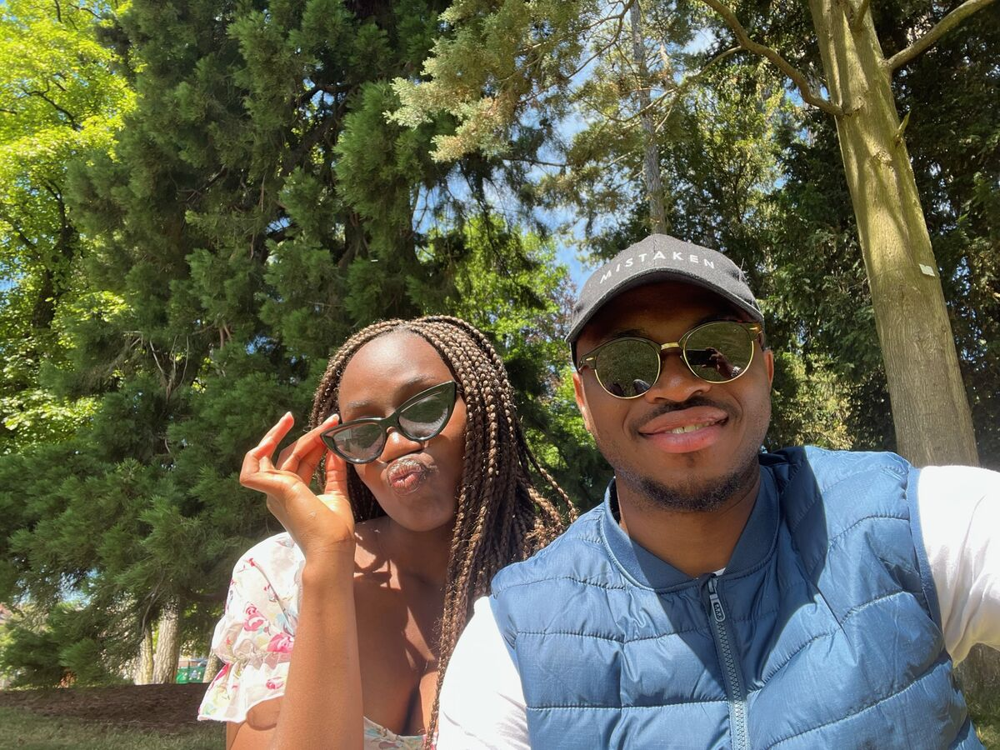
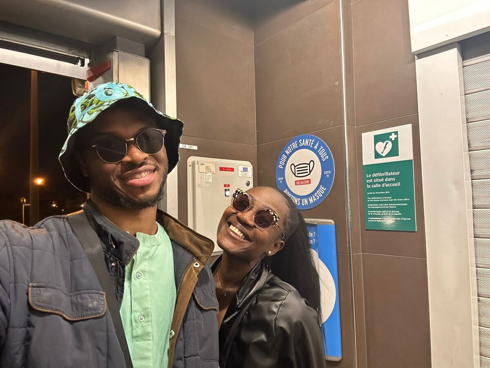
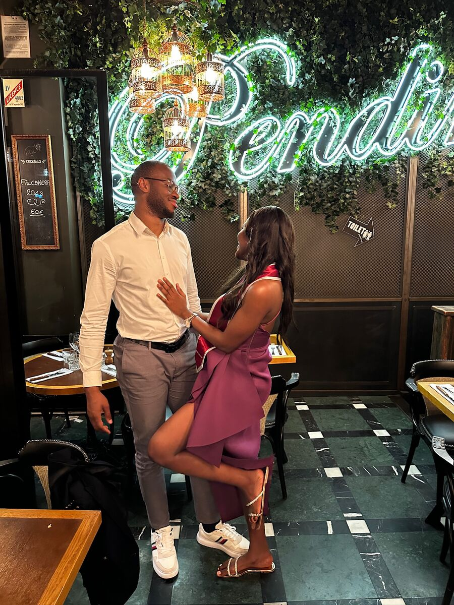
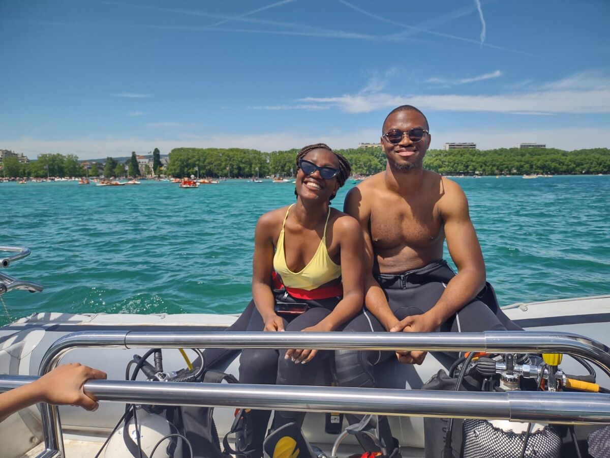
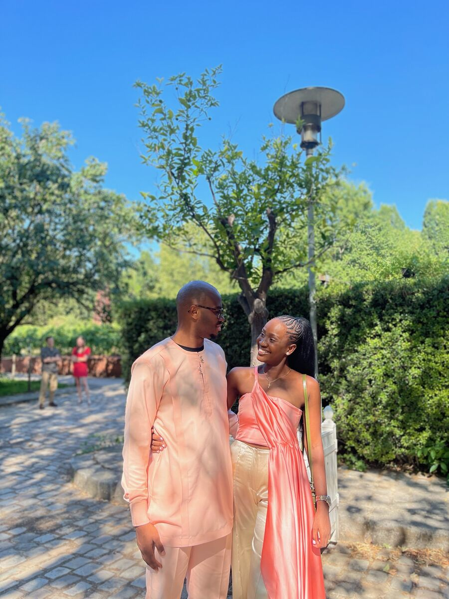

Yaoundé, Cameroun
Sous les couleurs tendres du couchant, nous vous convions à partager un instant suspendu, entre ciel, amour et promesse d’infini.
Le 26 juin 2027, nous aurons la joie de célébrer notre mariage religieux à Yaoundé, entourés de nos familles et de nos proches.
Nous avons imaginé cette journée comme un avant-goût du ciel : douce, lumineuse, chaleureuse, portée par la foi, l’amour et la joie d’être ensemble.
Notre histoire a commencé simplement, sur Snapchat, avec quelques stories regardées de loin, puis un plat de sangha qui a tout déclenché. Ce qui semblait être un petit échange sans importance est devenu, avec le temps, une histoire d'amour, une famille et un engagement construit avec Dieu au centre. Aujourd'hui, nous revenons au Cameroun pour célébrer cette histoire auprès de nos familles, là où sont nos racines.





Tout a commencé en septembre 2021, presque sans bruit, à travers quelques stories Snapchat. Nous nous suivions sans vraiment nous connaître, sans imaginer que Dieu était peut-être déjà en train de préparer quelque chose. Emmanuelle avait tout de même fait un petit détour par Instagram — juste pour savoir à qui elle avait affaire. Une enquête très sérieuse, évidemment. Mais malgré cela, rien ne se passe vraiment.
Jusqu'au 17 janvier 2022. Ce jour-là, Durand est au Cameroun pour les vacances et publie une photo d'un plat de sangha. Et là, contre toute attente, Emmanuelle ose répondre. Quelques émojis seulement. Puis les émojis deviennent des messages, les messages deviennent des conversations, et les conversations prennent peu à peu une place qu'aucun de nous n'avait prévue.
Avec le temps, nous avons appris à nous découvrir vraiment. Durand réfléchit, analyse, mesure ; Emmanuelle ressent, improvise, se lance. Lui apporte l'ancrage, elle l'énergie. Mais c'est justement dans ces différences que notre équilibre s'est construit — à nous accueillir plutôt qu'à nous changer, avec patience, avec vérité, et surtout avec Dieu au centre.
Le 21 novembre 2024, la naissance de notre fille a donné une nouvelle couleur à notre famille. De deux, nous sommes devenus quatre. Elle nous rappelle chaque jour que l'amour se vit aussi dans les choses simples : une présence, un repas partagé, une prière, une main tendue.
Le 9 mai 2026, nous nous sommes dit oui civilement en France, où nous vivons aujourd'hui. Mais notre histoire porte aussi les couleurs du Cameroun, où sont nos racines. Alors à l'été 2027, nous y retournerons pour célébrer notre union en deux temps : d'abord le mariage traditionnel et la dot, puis devant Dieu lors du mariage religieux, suivi du vin d'honneur et de la soirée.
Ce ne sera pas une nouvelle histoire. Ce sera la même histoire, simplement plus grande — une histoire commencée sur Snapchat, poursuivie autour d'un plat de sangha, devenue une famille, et portée depuis par une conviction simple : l'amour se choisit, se construit et se cultive, avec Dieu au centre.
Le grand jour
Une journée, une même lumière : celle d'un amour béni, entouré de nos familles et placé sous le regard de Dieu.
Chapelle du Lac, Yaoundé
Jardins de la Chapelle
Arc Bi Valley, quartier Golf, Yaoundé
Arc Bi Valley, jusqu'au matin
Dress code
Pour célébrer notre union, nous nous inspirons des couleurs magiques d'un coucher de soleil vibrant : du bleu céleste aux nuances ardentes de jaune, de pêche, de corail et de fuchsia. Choisissez la teinte qui vous inspire pour illuminer cette journée à nos côtés !
L'idée n'est pas d'être tous habillés pareil, mais de créer ensemble une belle harmonie visuelle : douce, romantique et chaleureuse.
À éviter si possible : le blanc total, réservé à la mariée, ainsi que les couleurs très froides ou fluorescentes.
RSVP
Afin de nous aider à organiser cette journée au mieux, merci de nous dire si vous serez des nôtres à la cérémonie religieuse et à la soirée.
Merci de répondre avant le 31 janvier 2027
Le formulaire ne s'affiche pas ? Ouvrez-le directement ici.
Pratique
Si vous venez de loin, nous vous conseillons de réserver votre hébergement assez tôt autour de Yaoundé, afin de profiter des meilleures disponibilités et de vivre ces journées en toute sérénité.
Liste de mariage
Votre présence est déjà un très beau cadeau. Mais si vous tenez absolument à nous gâter — et on ne va pas vous en empêcher — les canaux suivants seront disponibles pour contribuer à nos projets, nos rêves et notre quotidien.
emmanuelleimelda15@gmail.com
0769361765
Merci du fond du cœur d'être présents dans cette aventure, de près ou de loin.
Questions fréquentes
Merci de vous référer à votre invitation. Si un accompagnant est prévu, cela sera indiqué dans les informations qui vous seront transmises. En cas de doute, n'hésitez pas à nous écrire avant de répondre au RSVP.
Oui, s'il vous plaît. La journée se déroulera en plusieurs temps, et nous avons besoin de savoir à quels moments vous serez présents afin d'organiser au mieux l'accueil, les espaces et les repas.
Merci de confirmer votre présence avant le 31 janvier 2027.
Si possible, merci d'éviter le blanc total, réservé à la mariée, ainsi que les couleurs très froides ou fluorescentes. L'idée est de créer une harmonie douce, lumineuse et élégante sur les photos.
Les enfants ne sont pas interdits, mais leur présence n'est pas particulièrement conseillée, notamment pour la soirée : forte sonorisation et activités peu adaptées aux plus jeunes. Si vous venez avec un enfant, merci de le préciser dans votre réponse RSVP.
Oui, un parking sécurisé sera disponible à Arc Bi Valley pour l'apéro, le dîner et la soirée dansante. Pour les autres lieux, prévoyez un peu d'avance.
Les invités sont invités à organiser leurs déplacements entre la Chapelle du Lac et Arc Bi Valley, quartier Golf à Yaoundé.
Une question ?
Pour toute question, écrivez-nous à emmanuelle.durand.cmr@gmail.com ou appelez au 07 67 83 51 65.